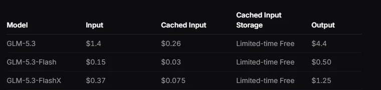
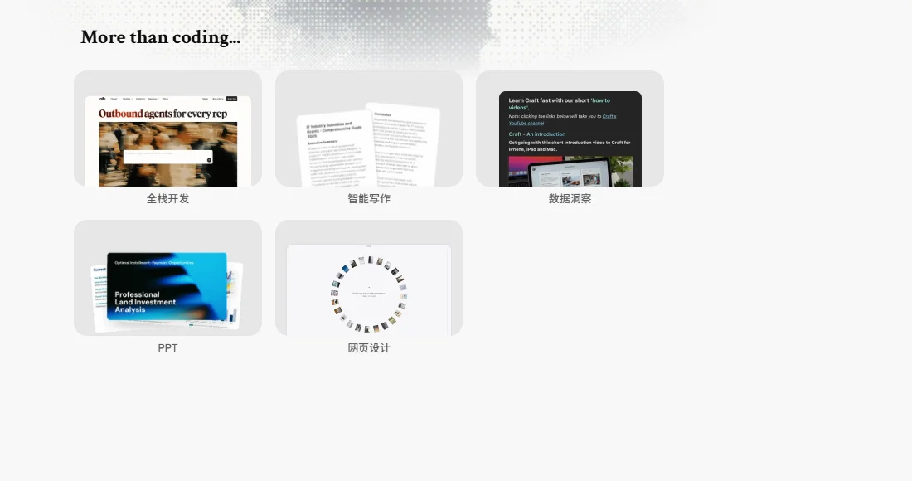

智谱北京智谱华章科技（02513.HK）
“全球大模型第一股”：2026 年 1 月在港交所上市，11 个月迭代 6 代 GLM 旗舰并全部开源；收入结构从卖项目转向卖调用，开放平台与 API 占上半年收入 86.5%，MaaS 年化收入约 16 亿美元。
一页结论
- 首家上市的大模型公司：2026-01-08 港股上市，发行价约 116 港元；6 月股价一度冲上 2,980 港元，市值突破万亿港元，此后回落S3S4
- 收入结构切换：上半年开放平台及 API 收入 8.25 亿元、同比增长 27 倍，占总收入从 26.3% 升至 86.5%；本地化部署项目占比大幅下降S3
- 量价齐升：API 平均售价提升约 101%，token 调用量较年初增长 40 倍以上，付费日活增长 6 倍S3
- 开源节奏最快：11 个月连续发布 GLM-4.6 至 GLM-5.3 六代旗舰，GLM-5.3 与 GLM-5.3-Flash 以 MIT 协议开源，Flash 版下载超 630 万次S3S2
- 仍在亏损：2025 年亏损 47.2 亿元，2026 上半年亏损 20.7 亿元、同比收窄 12.1%S5
01公司介绍
02公司战略
智谱的打法是“高频开源旗舰 + 从项目制转向 API 订阅 + 编程场景”。
- 高频迭代并开源：11 个月 6 代旗舰，智能指数持续提升S3
- 卖调用而非卖项目：本地化部署占比从七成以上降到一成多S3
- 提价而非降价：一季度 API 价格上调 83%，调用量仍同比增长 4 倍S5
- 编程优先：推出 ZCode 与 Coding Plan，GLM 模型进入 Cursor、TRAE 等工具S7S8
03模型矩阵与定位
| 模型 | 定位 | 输入 | 输出 |
|---|---|---|---|
| GLM-5.3 | 旗舰 | $1.40 | $4.40 |
| GLM-5.3-FlashX | 高速 | $0.37 | $1.25 |
| GLM-5.3-Flash | 经济，MIT 开源 | $0.15 | $0.50 |
| GLM-5.3-FlashX-Legal | 法律领域 | $0.37 | $1.25 |
| GLM Slide / Poster Agent | 幻灯片与海报 Agent（beta） | $0.7 / 百万 token | — |
价格单位：美元 / 百万 token；缓存存储限时免费。来源：S1

04产品与 Agent 布局
应用层
Z.ai 对话与 Agent：全栈开发、智能写作、数据洞察、PPT、网页设计ZCode 编程产品幻灯片 / 海报 Agent
开发者平台
MaaS API 平台（740 万+ 用户）Coding Plan 订阅网页搜索等工具
模型层
GLM-5.3 / FlashX / FlashGLM-Image行业版（法律）
算力层
云与国产算力
渠道z.ai 与 bigmodel.cnHugging Face第三方编程工具（Cursor、TRAE 等）

05开放权重
| 模型 | 发布 | Hugging Face 下载 |
|---|---|---|
| GLM-5.3-Flash | 2026-08-25 | 约 633 万 |
| GLM-5.3 | 2026-08-25 | 约 247 万 |
| GLM-5.2 | 2026-06-16 | 约 26 万 |
| GLM-5.1（FP8） | 2026-04-03 | 约 2 万 |
06商业模式
利润率：汇丰研报认为收入组合转向利润率较低的 API 会摊薄利润率，但预计扭亏可能提前S6。
07上下游与渠道
上游：算力
云与国产算力（公司未公开详细供应商）
智谱
GLM 模型、MaaS、ZCode
渠道
MaaS 平台直销Hugging Face 开源编程工具集成政企客户（本地化部署）
资本
港股上市与增发、9 月完成约 50 亿美元再融资（媒体报道）S4
下游客户
740 万+ 平台用户S3
08用户与收入
09开发者口碑
10安全合规
11近期动态
12潜在风险分析意见
“可能程度”为基于现有公开信息的判断，不是量化预测。
13综合结论分析意见
优势
- 上市带来的资本与透明度
- 开源迭代速度最快
- 编程场景能力强
劣势
- 收入规模仍小
- 持续亏损
机会
- API 量价齐升
- 海外开发者市场
威胁
- 国内价格战与巨头竞争
- 海外合规
对 AI 产品团队的启示
- 从项目制转向订阅调用是规模化的关键：智谱半年内把 API 占比从 26% 提到 86%。
- 能力够强就能提价：API 涨价 83% 后调用量仍增长 4 倍，说明开发者为效果买单。
- 高频开源维持热度：11 个月 6 代旗舰，让模型始终处在开发者视野中。
- 上市公司的数据是最好的行业参照：智谱是少数能看到完整财务数据的大模型公司。
信息缺口
以下信息未找到可靠的公开来源，本报告不做推测。
- ZCode 的最新用户数（此前报道为 100 万以上，未能核实最新数字）
- 算力供应商与成本结构
- 海外收入占比
- 9 月再融资的具体构成
来源
A 官方 · B 权威媒体或第三方 · C 社区（仅用于口碑与线索）。访问日期均为 2026-11-02。
- S1 · APricingZ.ai 文档
- S2 · Azai-org on Hugging FaceHugging Face
- S3 · B大模型第一股智谱的首份中报：收入超去年全年，MaaS ARR 达 16 亿美元凤凰网 · 2026-09
- S4 · B智谱股票百度百科
- S5 · B智谱 2026 上半年超去年全年营收，不及市场预期凸显竞争压力东方财富网 · 2026-09-01
- S6 · B滙豐研究降智譜目標價至 1,500 元雅虎财经香港 · 2026
- S7 · AZ.ai 官网智谱
- S8 · ACursor Models & Pricing（含 GLM）Cursor 文档
- S9 · BMeta Muse Spark Open（第三方评测对比）The New Stack · 2026-10